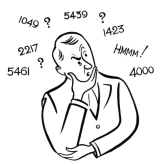

|  | & Trotter Primes |
 |
|
Recently (June 2001) I became aware of an interesting website, dedicated to the discovery and reporting of appearances of the number 47 in our world. It is called, appropriately enough, the 47 Society. They post e-mail notes from the members about any trivia related to what they claim is the "quintessential random number". Well, if you have read the pages of WTM, it should come as no surprise to you that I "enlisted" in the society. And on June 8, I wrote my first e-mail to them, which said:
Hey, I like your neat project about 47. While I'm not quite ready to believe that 47 is the only number worth looking for, :>) , I do enjoy looking for number facts of any kind.
So here's my humble contribution...
About 9 years ago I wrote a letter that was published in the Nov. '92 issue of the MATHEMATICS TEACHER (NCTM) about "1992". You see, 1992 = 8 x 3 x 83. But also in the past thousand years only 2 other years had that same structure: a x b x 'ab'. They were 1533 = 7 x 3 x 73 and (ta-dah!) 1316 = 4 x 7 x 47.
This morning as I lay in bed thinking about "47" (yes, this is true), it struck me that "47" was the concatenation of "4" [a square; I like squares, too] and "7" [the "ubiquitous 7", as I like to say]. So I began examining other such cases.
We get 17, 47, 97, 167, 257, 367, ... all primes so far. [But of course, 497 isn't prime, but that was sorta to be expected.] Some future terms from here on are primes, while others are not.
BUT 47 is the 2nd prime in this sequence, and 2 is the only even prime. So that might count for something, huh?
[Which brings to mind this quote: All primes are odd except 2--which is therefore the oddest of them all. [Knuth] ]
I hope you like this, and I'll keep my eye out for more 47's, okay?
That little comment about the sequence of numbers containing the number 47 was the inspiration of all that follows in this article. I warn you -- it gets wild at times. Enjoy.
Definition
The set of Trotter Numbers is a subset of the natural numbers, or positive integers, defined by the following rule:

P.S. WTM is rather pleased to state that the sequence given above can be found in Sloane's On-line Encyclopedia of Integer Sequences and has its own reference number: A061722.
| Comments? Send e-mail. | Back to top | Go back to Home Page | Go back to Contents |